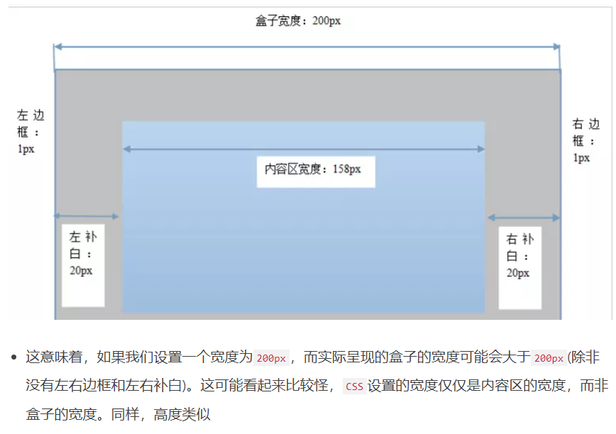

总结一些css比较重要的属性和经验
position
参看https://developer.mozilla.org/zh-CN/docs/Web/CSS/position
position: static | relative | absolute | fixed
relative是根据原来位置进行偏移，仍然保留原来的文档空间[1]
其中(absolute&fixed)会被移出文档流，不占据原来文档流的空间,absolute是根据最近的非static的祖先元素定位偏移[2]，flex是根据视窗来定位。
由[1][2]，可以便捷的布局，这就是div布局里常用的福祥“子绝父相”
垂直外边距合并问题
https://zhidao.baidu.com/question/1175146269673993779.html
外边距合并： 当两个垂直外边距相遇时，他们形成一个外边距，合成后的外边距等于两个外边距张较大的哪个。
实际工作中，垂直外边距合并问题常见于第一个子元素的margin-top会顶开父元素与父元素相邻元素的间距，为父元素增加一个border-top或者padding-top即可解决这个问题。
使用box-sizing解决盒子布局问题
参看https://developer.mozilla.org/zh-CN/docs/Web/CSS/box-sizing
在盒子模型中
盒子的实际宽度和高度 = padding + border + width

使用box-sizing: box-border可以完美解决问题，声明的长度和宽度都只作用到内容上